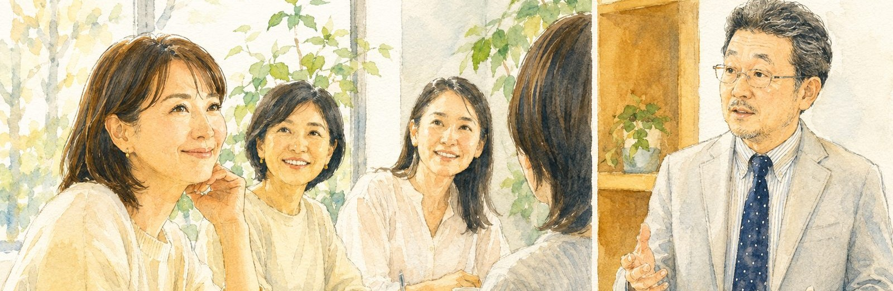
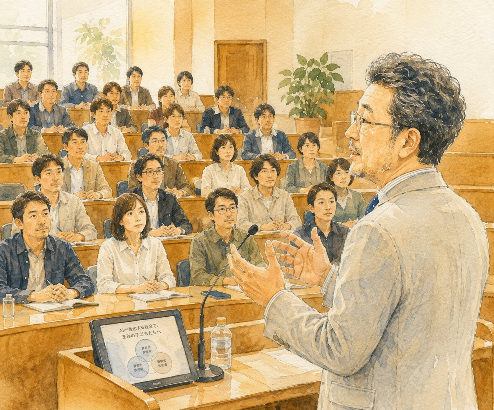

第 1 回
10月18日
日 曜 日
14:00-15:45
「いい親」をやめると、
子どもは伸びる
熱心な親ほど陥りやすい関わり方を、ひとつずつ分解していきます。手放してよいもの、手放すべきものはどこにあるのか。良かれと思って続けてきたことを、いったん棚に置いてみる時間です。

一般社団法人 教育研究所ARCS が贈る 子育てセミナー
小学生〜高校生のお子様をお持ちの保護者の方へ
管野淳一 教育講演会
秋 ・ 全 2 回塾クセジュ柏教室
教育研究所ARCS代表・管野淳一が、40年の現場経験から語ります。世の中で「正しい」とされている子育ての作法を、いちど疑ってみる。よかれと思って続けてきたことを、いったん棚に置いてみる。そこから見えてくるものを、二回にわたってお話しします。

親学とは？
時代と共に子育ての常識も変わります。古い子育てを脱して、今の時代にふさわしい子育てのあり方を提案したい——。代表理事・管野淳一が、この講座で伝えたいことを綴りました。
詳しくはコチラ →10月18日
日 曜 日
14:00-15:45
熱心な親ほど陥りやすい関わり方を、ひとつずつ分解していきます。手放してよいもの、手放すべきものはどこにあるのか。良かれと思って続けてきたことを、いったん棚に置いてみる時間です。
11月29日
日 曜 日
14:00-15:45
やる気は、促して出るものではありません。条件が揃ったときに、ひとりでに生まれるものです。その仕組みを解きほぐし、家庭で今日から変えられることを具体的にお伝えします。
全2回の構成ですが、各回だけのご参加も大歓迎です！

塾クセジュ柏教室
千葉県柏市明原2-6-1
JR常磐線・東武アーバンパークライン 柏駅 西口より
柏駅西口を出て、国道6号方面へ。ニッポンレンタカーの先です。
お車でお越しの場合は、近隣のコインパーキングをご利用ください。

お申し込みはスマホでカンタン！
下のフォームに必要事項をご記入のうえ、送信してください。折り返し、確認のメールを自動でお送りします。
パソコンでご覧の方は、QRコードをスマートフォンで読み取ると、お手元でご記入いただけます。
※ 席に限りがございます。定員になり次第、受付を終了します。
※ 申込〆切：各回の開催日の10日前
フォームが表示されない場合は、こちらのページからお申し込みください。

管野 淳一かんの じゅんいち
一般社団法人 教育研究所ARCS 代表理事
高校教師、塾講師を経て、1984年に塾クセジュを創立。千葉県東葛地域を中心に6教室・生徒数およそ1000名の進学塾へと育てる。2014年、「地域の教育力向上」と「親の意識改革」を目指して教育研究所ARCSを設立。
市教育アドバイザー、学校コンサルタントを務める一方、親のための講座「親学」、お母さんのための「母親塾」を各地で開催。YouTube「KSチャンネル」配信中。著書に『中学受験が子どもをダメにする』（幻冬舎）。読売新聞、週刊朝日ほかに記事掲載。